A Wantzel demo
Your agents pick up work, claim it so no two collide, write down what they found, and hand it back. You see a clean board — and can open the machine-level detail whenever you want it.
A kanban board, a list, a REST API and an MCP server. One 602 kB binary, one port, no dependencies.
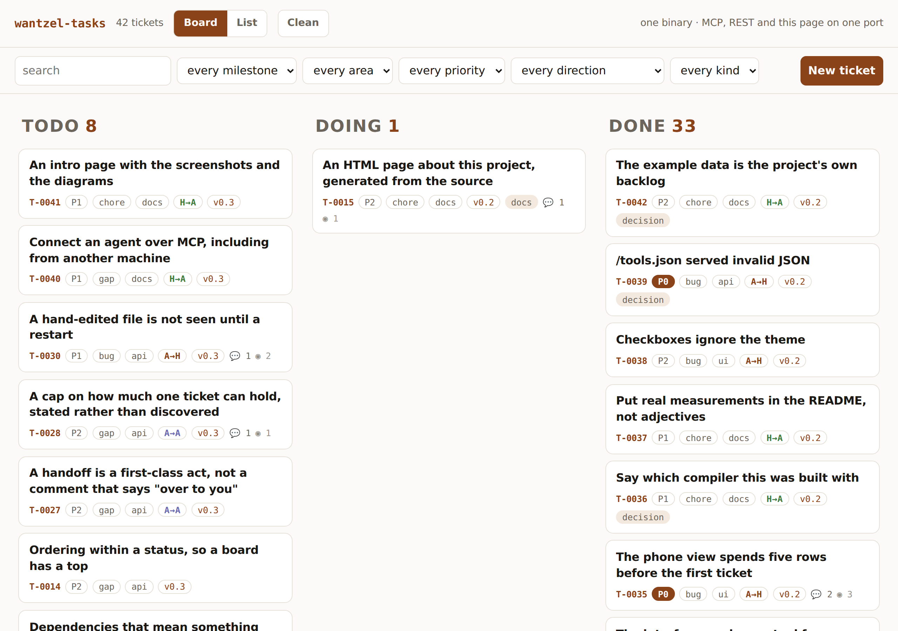
$ ./wztrun building ... 32 ms, 649K wantzel-tasks 42 tickets One server, four doors -- all on port 7777: http://127.0.0.1:7777/ the board, in a browser http://127.0.0.1:7777/docs the API, generated from schema.wz http://127.0.0.1:7777/api/<tool> REST -- POST, arguments as JSON http://127.0.0.1:7777/mcp MCP -- POST, for Claude, Codex, Cursor
That is the entire startup: one command,
32 milliseconds, no configuration. Four ways into one process — and the board, your
agent and curl are all looking at the same tickets.
Agent output is usually fine. There is just an enormous amount of it, arriving fast.
A person investigating a bug writes one line: “the cap was there, the answer did not mention it.” An agent investigating the same bug writes the four hundred lines that led to that sentence — what it read, what it ruled out, the two approaches that failed. Both are worth having. But a week of this and the ticket that took a minute to read takes twenty, so people stop reading. The record still exists and nobody consults it, which is indistinguishable from not having one.
The two usual answers both lose. Forbid agents to write, and you lose exactly the detail that made the ticket worth keeping. Let them write and tell people to skim, and the humans disengage.
Connect it once and the backlog becomes something your agent operates, rather than
something you paste into a prompt. This is an unedited session against a running
wantzel-tasks — two questions, two tool calls:
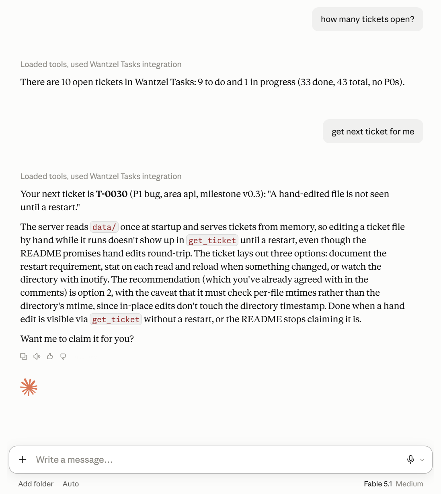
ticket_stats returned {"total":43,"todo":9,"doing":1,"done":33,"p0":0}
and next_ticket returned T-0030 — P1, bug, area api, milestone
v0.3. Nothing was staged for the screenshot.The second answer is the one worth reading twice. The agent did not just report a title: it read the ticket body, found the three options the ticket lays out, and repeated the caveat another agent had left in the comments — that it must check per-file mtimes, because an in-place edit does not touch the directory's timestamp. Then it offered to claim it.
That is the whole argument for the two registers. The reasoning it needed was written by a machine, for a machine, and it was still there to be found — while the board stayed readable for people, because that detail is folded away by default.
The exchange above was reading. This is writing — and it is the part that changes how a backlog gets used, because filing a ticket properly is exactly the chore people skip.
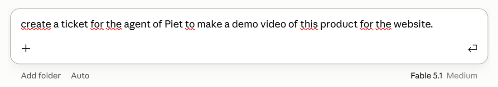
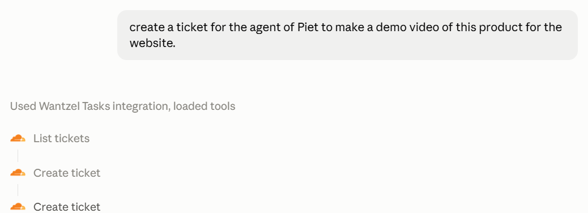
list_tickets first — the agent searched for an existing ticket mentioning Piet
before creating anything. Nobody told it to.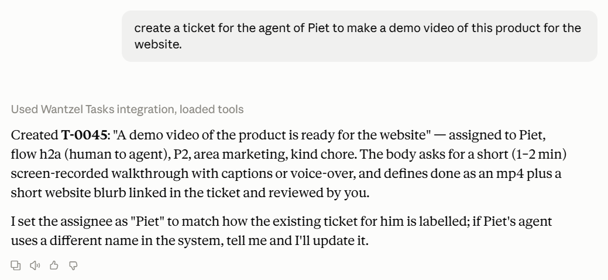
flow: h2a, P2, area marketing, kind chore — including the
part it was unsure about: "I set the assignee as 'Piet' to match how the existing ticket
for him is labelled."What came back is a complete ticket: a title stated as an outcome, a
What / Why / Done when body, flow: h2a, and an assignee that matches
the existing convention. The kind of ticket that gets written when someone has time, from a
sentence typed when they do not.
Most integrations are described rather than shown. Here is the whole exchange behind that second answer, exactly as the client sent and received it.
First the agent looked, before it wrote — and note the audience
filter: it asked for the human register, not everything.
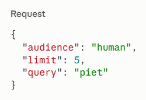
{"tickets":[{"id":"T-0027","title":"A handoff is a first-class act…",
"priority":"P2","area":"api","kind":"gap","assignee":"Piet", …}],
"returned":1,"matched":1,"truncated":false}That one call is why the ticket it then created says "assignee": "Piet" and
not "piet" or "Piet's agent": it found how the name was already
spelled and matched it. Nobody told it to check.
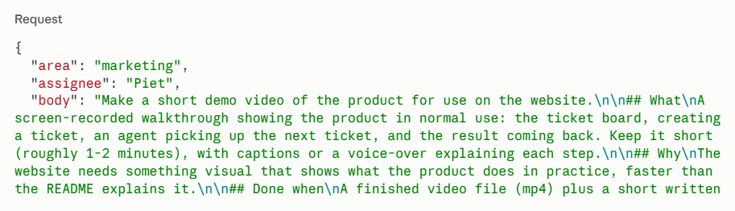
{"ticket":{"id":"T-0045","title":"A demo video of the product is ready for the website",
"status":"todo","priority":"P2","area":"marketing","kind":"chore","assignee":"Piet",
"flow":"h2a","labels":[],"blocked_by":[],
"created":"2026-09-14T20:44:13Z","updated":"2026-09-14T20:44:13Z",
"comments":[],"worklog":[]}}Three things in that pair are worth pointing at:
flow: h2a itself. A person asking an agent to
do something — nobody in the conversation used the word.data key — the shape is exactly what schema.wz declares, which
is also exactly what /tools.json promised the client before it called.And it is a file you can read:
$ cat data/T-0045-a-demo-video-of-the-product-is-ready-for-the-website.md
---
id: T-0045
title: A demo video of the product is ready for the website
status: todo
priority: P2
area: marketing
kind: chore
assignee: Piet
flow: h2a
---
Make a short demo video of the product for use on the website.
…Two ways, both about a minute.
{
"mcpServers": {
"wantzel-tasks": {
"command": "/path/to/wantzel-tasks",
"args": ["--data", "/path/to/your/tickets", "--stdio"]
}
}
}$ ./wztrun --tunnel building ... 31 ms, 649K wztrun: opening a public address ... wantzel-tasks 43 tickets One server, four doors -- all on port 7777: http://127.0.0.1:7777/ the board, in a browser http://127.0.0.1:7777/docs the API, generated from schema.wz http://127.0.0.1:7777/api/<tool> REST -- POST, arguments as JSON http://127.0.0.1:7777/mcp MCP -- POST, for Claude, Codex, Cursor the address appears below; it is new every run, so it is for a demo, not for a connector you want to keep. https://down-compliant-regions-payday.trycloudflare.com
That address works immediately, from anywhere, with a
valid certificate — the board at / and MCP at /mcp. If
cloudflared is not installed, --tunnel offers to fetch it
first (one binary, ~40 MB) rather than sending you to a download page.
It is right for a demo and wrong for a connector you want to keep, because the hostname is new every run and an MCP connector is registered against one fixed URL. For something permanent, a named tunnel gives you a fixed hostname on your own domain:
cloudflared tunnel login
cloudflared tunnel create wantzel-tasks
cloudflared tunnel route dns wantzel-tasks tasks.example.com
cloudflared tunnel run --url http://127.0.0.1:7777 wantzel-tasks
# then add https://tasks.example.com/mcp as a custom connectorinitialize; if that works, everything does:
$ echo '{"jsonrpc":"2.0","id":1,"method":"initialize",
"params":{"protocolVersion":"2024-11-05","capabilities":{},
"clientInfo":{"name":"claude","version":"1"}}}' \
| ./bin/wantzel-tasks --data data --stdio
{"jsonrpc":"2.0","id":1,"result":{"protocolVersion":"2024-11-05",
"capabilities":{"tools":{"listChanged":false}},
"serverInfo":{"name":"wantzel-tasks","version":"0.1.0"}}}Your agent now has eleven tools. GET /tools.json lists them with a JSON
Schema each — generated from the declaration, so it is never out of date.
None of the above is theory. These are the actual steps of pointing Claude Desktop at a
running wantzel-tasks, over the tunnel that ./wztrun --tunnel
just opened.
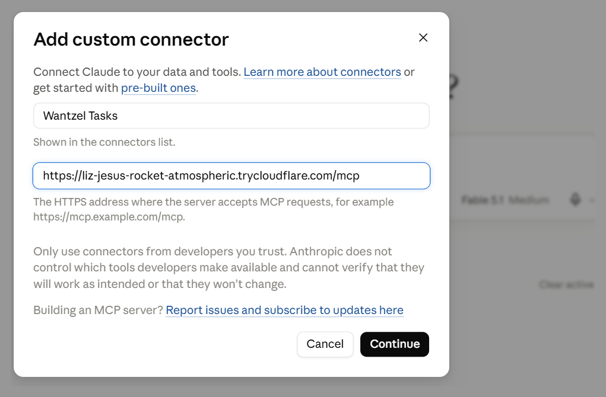
/mcp on the end. No API key, no OAuth app, no manifest to host — this
server is authless, so the URL is the whole configuration.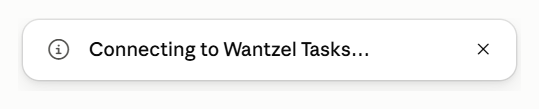
initialize and then tools/list, and the server
answered with its name, its version and eleven tools — every one of them generated from
schema.wz.What is worth noticing is how little happened. There is no SDK in this project, no MCP
library, no framework and no adapter layer: the tools block in
schema.wz is the server. The client on the other end cannot tell it
apart from any other MCP server, and it is a 602 kB static binary that started in six
milliseconds.
From there it is just a conversation — the session above is that same connection, a minute later.
This is also where the demo broke once. The first time a client said
hello, the server died — initialize was the only handler reading two fields
the application never set, and no test touched it because every test calls the tools
directly. Twelve green tests and a working board, and the one call every client makes
first was fatal. It is T-0031 in the backlog, with
the work log and the regression test that now guards it.
The claim is easy to make and hard to believe, so here it is as one sequence. A colleague
files a ticket on the board. Your agent finds it over MCP, works it and reports back. You
check the result with curl. Nothing synchronises, because there is nothing to
synchronise — it is one process, one directory, one tool table.
update_ticket, the same tool your agent calls.Files a bug: “A hand-edited file is not seen until a restart”,
sets it to a2h — it needs a decision before anyone writes code.
next_ticket returned it, and the agent read the body, weighed the three options it listed, and left its analysis in the agent register:
“Recommending option 2 — stat on each read. Caveat: it must check per-file mtimes, not the directory's, because an in-place edit does not touch the directory timestamp.”
$ curl -s -X POST localhost:7777/api/list_tickets \
-d '{"flow":"a2h"}' | jq '.tickets[].title'
"A hand-edited file is not seen until a restart"One call answers what is waiting on me? — and it is the same data the board is drawing and the agent just wrote.
flow is a field, not a label, because it changes how a ticket is
read. It is the single most useful thing on a mixed backlog: it separates work a
machine is doing from work a machine is stuck on.
h2a | human → agent. A person asked an agent to do something. This is most of the backlog. |
a2h | agent → human. An agent needs a decision, an approval or a credential. It is blocking a machine that would otherwise still be working — a different urgency from a P0 nobody has started. |
a2a | agent → agent. One agent handed work to another. You mostly do not need to read these. |
h2h | human → human. The way tickets have always worked. |
Neither status nor priority can express this:
todo cannot distinguish “not started” from “stopped, waiting for a person”. The
arrow on each card is the meaning, so there is nothing to learn.
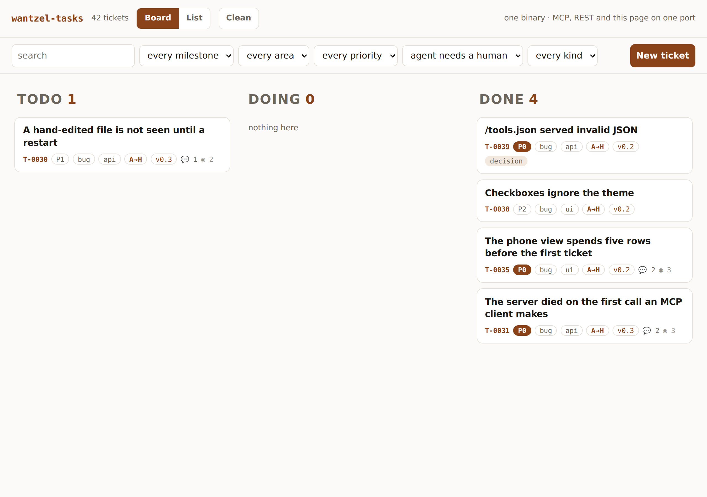
a2h: every place your agents are blocked on
you. On a busy backlog this is the first thing you look at in the morning.Every comment and every work log line carries an audience:
human (short, written for a person) or agent (complete, written
for a machine). It is per entry, not per ticket, because one ticket interleaves
both. The default is human — a field that defaults to the noisy value fills up
with noise on its own.
One switch in the top bar — Clean / Everything — flips every view at once and is remembered, so someone who wants clean tickets sets it once.
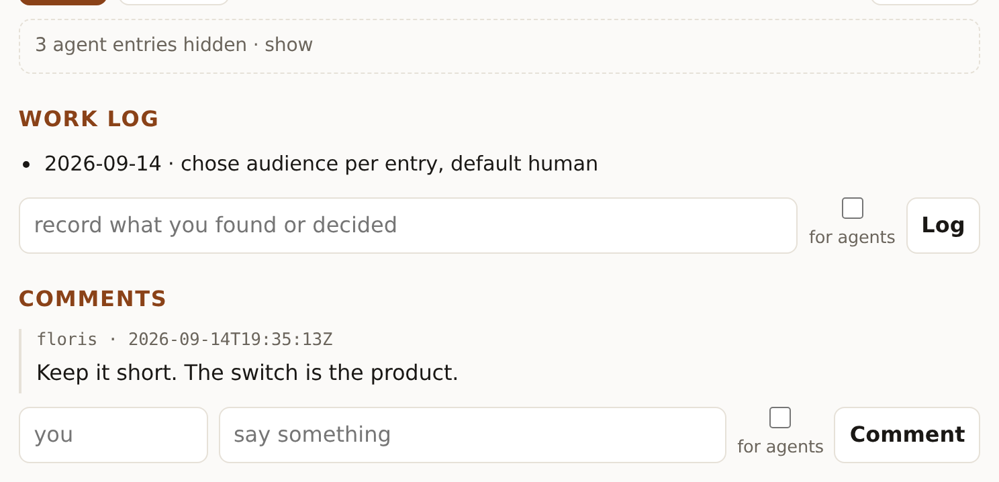
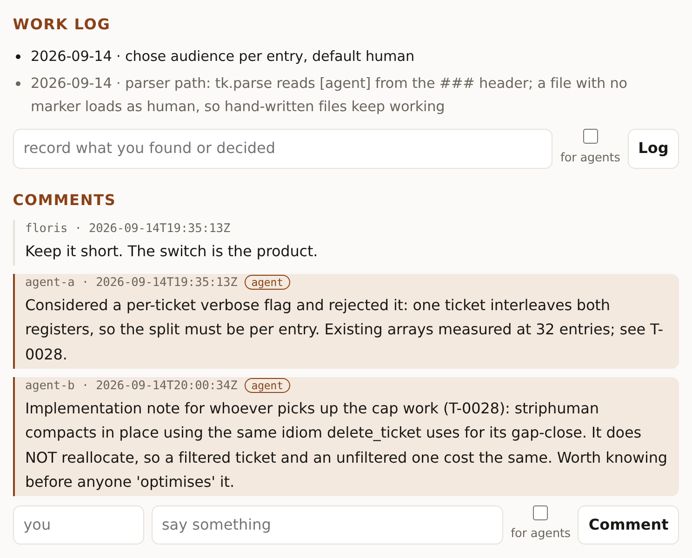
agent, so you always know which register you
are reading — and nothing was ever deleted to get the view above.Writing works the same way: a for agents checkbox beside the comment and work log
boxes, so a person can leave machine-level detail without cluttering the human thread. Over
the API it is one field — audience: "agent" — and in the file it is a
[agent] marker on the entry.
Two agents reading the same backlog pick the same top ticket, because they are looking at the same order and they are both right. With people a standup resolves it; with agents it is two hours of duplicated work, discovered at merge time.
update_ticket cannot fix this — read-then-write leaves a gap, and the gap is
exactly where both agents decide to go. claim_ticket is a conditional write: it
sets assignee and status in one call and refuses if the ticket is already
held.
POST /api/claim_ticket {"id":"T-0024","who":"agent-a"}
→ {"ticket": {…, "assignee":"agent-a", "status":"doing"}}
POST /api/claim_ticket {"id":"T-0024","who":"agent-b"}
→ {"detail":"already claimed"}The refusal is the useful half: agent-b learns immediately and takes the next ticket.
next_ticket then answers “what should I pick up?” in one call, with the
ordering rule on the server so every agent agrees what next means.
src/schema.wz is 246 lines and is the entire API. The compiler turns it into
the JSON parser and writer for every shape, the MCP tool table, the argument checking, the
REST routes, and 30 kB of JSON Schema. None of that is in the repository, and none of it
can drift from the declaration — because it does not exist separately from it.
update_ticket, exactly as an agent would: the
page has no private route.The demo serves its own reference at /docs. It is not a document beside the
code — it renders itself from /tools.json, the same generated table your MCP
client reads, so it cannot be out of date. Add a field to schema.wz and it
appears here on the next build.
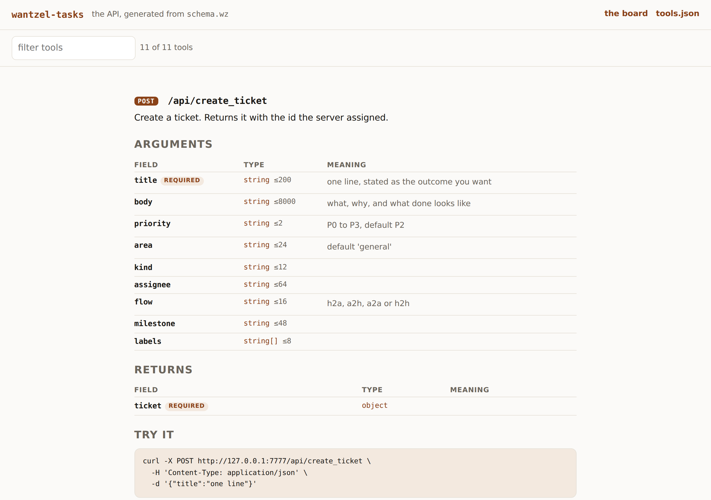
One markdown file per ticket: frontmatter for the fields, the body for the story. You can
read one with cat, edit it in an editor, and put the directory in git — where a
change shows up as a diff on the ticket that changed.
---
id: T-0023
title: Two registers: short for people, complete for agents
status: done
priority: P0
flow: h2a
---
## Work log
- 2026-09-14 - chose audience per entry, default human
- [agent] 2026-09-14 - parser reads [agent] from the ### header
## Comments
### 2026-09-14T19:35:13Z floris
Keep it short. The switch is the product.
### 2026-09-14T19:35:13Z agent-a [agent]
Considered a per-ticket verbose flag and rejected it: one ticket
interleaves both registers, so the split must be per entry.The [agent] marker is the register, in the file. A ticket written by hand
with no marker loads as human, so hand-written files keep working.
Measured, not estimated. wztrun prints the compile time on every build, so
the first row is one you will see for yourself.
| what | measured |
|---|---|
| compile, whole application | 30 ms — ~4,300 lines including the library |
| startup to first answered request | 6 ms, having read every ticket file |
ticket_stats | 0.15 ms — ~6,600 requests/second |
list_tickets, full JSON | 0.41 ms — ~2,400 requests/second |
the whole page, GET / | 20 kB in 0.5 ms |
| resident memory | 3.3 MB |
| binary | 602 kB, statically linked |
| dependencies | zero, at build time and at run time |
The compile time is the one that changes how you work. An agent's loop is write, compile, read the error, fix. At 30 ms that loop costs nothing, so the compiler becomes the thing that checks your work rather than the thing you wait for. That is why a strict language is easier to generate than a permissive one.
Three statuses, not five. Milestones group work, labels tag it, blocked_by
links it. A work log and comments, both append-only — a record you can tidy up afterwards is
not a record. area and kind stay separate, because merging where
the work sits with what kind it is makes “which bugs are open?” unanswerable.
And the ordinary things are done: it works on a phone, and it follows your theme.
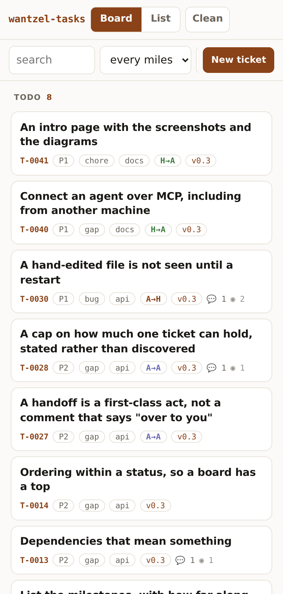
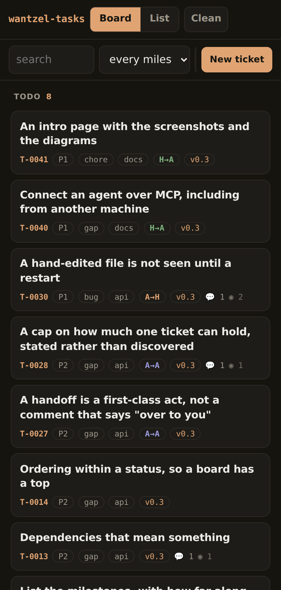
The compiler reached v0.1.0 on 13 September 2026. This application was built the next day, against v0.1.2 — a compiler one day past its first tagged release, and nowhere near finished.
That is the part worth sitting with. Not that a mature toolchain let an agent build something, but that a one-day-old one already did: a real ticket system with three interfaces, its own tests and its own documentation, in about three hours.
What that says is less about this application than about the shape of the language. The things that make an agent productive — a compile measured in milliseconds, errors that point at a line, one way to express a thing — were there from the first release, because they are design decisions rather than optimisations that arrive later.
And it gets better from here. The memory model is a choice, not a gap:
no heap, no pointers, no garbage collector, every array bound-checked. But the compiler,
the standard library and the tooling around them are young. Code generation, the runtime,
the breadth of lib/, and how much the compiler can tell you when something is
wrong all have a long way to go — and what production-grade software needs from a language
this age is something we expect to learn by building with it, not by designing it up
front.
If this is what one day past v0.1 looks like, the interesting question is what the same three hours buy at v0.5.
This whole project — the tickets, the tests, the application, the frontend and these documents — was written by Claude Code driving the Wantzel compiler, from an empty directory, in about three hours on 14 September 2026. A person set the direction and made the decisions; no line of it was typed by hand.
It was not frictionless, and the record is in the backlog: two bugs — a crash on the
first call every MCP client makes, and /tools.json serving invalid JSON — got
past a green test suite and were found by using the thing. Both are tickets with a
work log, and both now have a test. That is the honest version, and it is more useful than a
clean one.
Six chapters, written while building rather than afterwards. Each explains one decision and what it cost.
schema.wz, and why it cannot drift.git clone https://github.com/wantzel/demos
cd demos/wantzel-tasks
./wztrun # build, then http://127.0.0.1:7777/
./wztrun --stdio # the same MCP over a pipe, for an agent on this machine
./wzttest # 12 test files, ~170 checksThat is the whole installation: no package manager, no runtime, no container, no database. Built and tested with Wantzel 0.1.2.